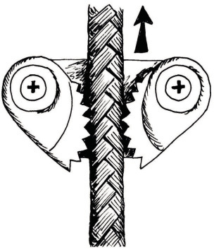
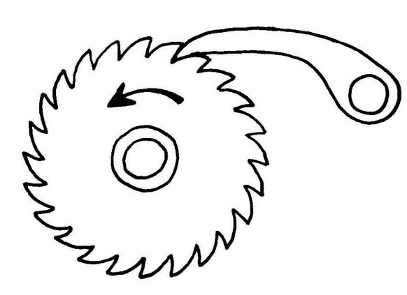
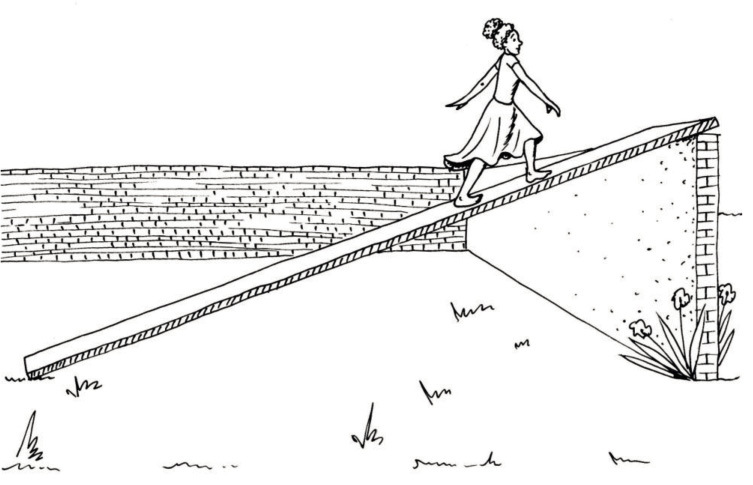
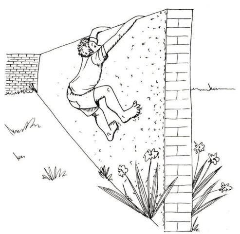

Katrolle en beheerstelsels
Rigtingverandering met 'n tou
Verskillende maniere om iets op te hys
Die man in figuur 2A op die vorige bladsy wil 'n sak nat sout tot by die tak ophys. Hy wil die sak aan die tak vasmaak sodat dit daar kan hang totdat die wind die sout uitgedroog het. Om die sak bo te kry het hy 'n tou oor die tak gegooi en die een punt van die tou aan die sak vasgemaak.
-
Merk die rigting waarin die man trek met 'n pyltjie op die prent op die vorige bladsy.
-
Merk die rigting waarin die sak sal beweeg ook met 'n pyltjie.
-
-
Dink jy dat die tou vir altyd sal hou as die man dit gebruik om swaar voorwerpe opwaarts en oor die tak te trek?

Figuur 3: Hierdie tou skuur teen die rand van 'n steen.
As jy met dieselfde stuk tou herhaalde kere swaar voorwerpe ophys, sal die tou, soos jy in die foto kan sien, verweer en uiteindelik breek.
As twee oppervlakke teen mekaar vryf, is daar kragte wat op die materiale inwerk en dele van die materiale kan breek. Die kragte wat materiale op mekaar uitoefen wanneer hulle teen mekaar vryf of skuur word "wrywingskragte" genoem. Op 'n koue dag vryf jy soms jou hande teen mekaar om hulle warm te maak. Die warmte is van die wrywingskragte afkomstig.
Om te voorkom dat wrywing 'n tou beskadig wat gebruik word om rigting te verander, kan jy die tou oor 'n wiel, wat 'n katrol genoem word, laat beweeg.
Die stelsel wat die man in figuur 5 gebruik, word 'n enkelwiel-vastekatrolstelsel genoem. Die doel daarvan is om die rigting van die trekkrag te verander, maar dit gee nie 'n meganiese voordeel nie.
Die man kan nie deur net een keer te trek die sak van die grond af tot by die tak ophys nie. Hy moet 'n plan maak sodat die sak nie na onder val terwyl hy sy greep verander om vir nog 'n trek gereed te maak nie.
Die diagram hier regs wys 'n toestel wat 'n "nokklamp" genoem word. As die tou opwaarts getrek word, sal die nokke nader aan die tou beweeg, dit vasknyp, en verhoed dat dit kan deurgly.
As die tou afwaarts getrek word, sal dienokke uitmekaar gedruk word en kan die tou ongehinderd deurbeweeg.
Toestelle soos 'n nokklamp, of die kleppe waarvan julle in hoofstuk 6 geleer het, laat sekere bewegings toe, maar voorkom weer ander bewegings. Sulke toestelle word "beheertoestelle" genoem.


-
Maak 'n ruwe skets in die spasie hieronder om te wys waar die man in figuur 5 'n nokklamp kan plaas om dit vir hom makliker te maak om die sak tot by die tak op te trek.

'n belangrike eksperiment
Vir die praktiese aktiwiteit wat jy nou gaan doen, het jy het 'n stukkie tou of 'n skoenveter, en 'n koppie of beker met 'n handvatsel nodig.
Plaas die koppie bo-op jou skoolbank. Steek die tou deur die handvastel. Hou een punt van die tou met jou linkerhand in die lug. Trek die ander punt van die tou opwaarts met jou regterhand om die koppie op te lig. Hou jou linkerhand stil! Laat die tou of skoenriem deur die handvatsel gly.

Word die koppie met dieselfde afstand opgelig as die afstand waarmee jy jou regterhand oplig? Herhaal die eksperiment en kyk goed na die bewegings, sodat jy die afstande duidelik sien. Probeer om jou waarneming te verduidelik.
Verskillende maniere om 'n katrol te gebruik
Die stelsel hier regs word 'n "katrolstelsel" genoem.
Kyk sorgvuldig na die diagram op die teenoorstaande bladsy, wat verskillende maniere wys waarop katrolle gebruik kan word as voorwerpe met 'n tou opgehys word.
In die diagramme is die rooi katrolle aan die ondersteuningstruktuur vasgemaak. Hulle kan draai, maar hulle kan nie beweeg nie. Die rooi katrolle word vaste katrolle genoem. Die blou katrolle kan beweeg en hulle word beweegbare katrolle genoem.
Figuur 10A wys 'n enkelwiel-vastekatrolstelsel.
Figuur 10B wys 'n enkelwiel- beweegbare katrolstelsel.
Figuur 10C wys 'n katrolstel of takelstel (Engels: block and tackle).

-
Kyk goed na figure 10A en 10C.
-
As die tou 10 cm na onder getrek word in figuur 10A, sal die las (die swart voorwerp) ook 10 cm opwaarts beweeg?
-
As die tou 50 cm na bo getrek word in figuur 10B, sal die las (die swart voorwerp) ook 50 cm opwaarts beweeg?
-
Wanneer sal jy meer werk verrig, as jy die tou 50 cm na onder trek in figuur 10A, of as jy die tou 50 cm na onder trek in figuur 10C?
-


In katrolstelsels soos hierdie is die doel van die vaste katrolle, wat hier in rooi gewys word, om die rigting van die tou te verander, sodat 'n mens na onder kan trek om 'n voorwerp op te hys.
Op watter wyse help die beweegbare katrolle, wat in blou gewys word, om dit makliker te maak om die swart voorwerp op te hys? As jy dit moeilik vind om hierdie vraag te beantwoord, onthou wat jy ondervind het toe jy die eksperiment met die toutjie en die koppie op bladsy 103 van hierdie hoofstuk gedoen het.
Die prent hieronder kan jou help om beter te verstaan hoe 'n beweegbare katrolstelsel werk.
Veronderstel die vrag is 50 cm onder die balk. Om die vrag tot by die vlak van die balk te hys, moet jou hand die tou 100 cm na bo trek. Jou hand beweeg dus 100 cm na bo terwyl die vrag slegs 50 cm na bo beweeg.
Omdat jou hand twee keer die afstand van die vrag beweeg, is die trekkrag wat jou hand moet uitoefen net die helfde van wat nodig sou wees om die vrag direk op te lig. Dit wil sê jy hoef slegs met 'n krag van 5 kg na bo te trek om die 10 kg vrag op te lig. Jy verkry dus 'n meganiese voordeel, maar 'n afstandsnadeel.
Meganiese beheerstelsels
'n Fiets kan nogal vinnig ry.

Om egter veilig te wees as jy met 'n fiets ry, moet jy in staat wees om die spoed te beheer. Jy het remme nodig. Een soort fietsrem word op die foto hier regs gewys. Die diagramme op die volgende bladsy sal jou help om hierdie foto beter te verstaan.

Dink aan 'n skêr:

'n Skêr kan ook só gemaak word:

Die handvatsels kan só gebuig word:
Die remstelsel in figuur 13 op bladsy 107 werk soos 'n meetpasser. So 'n remstelsel word 'n "passerrem" genoem (Engels: calliper brake).

-
Doen nou die volgende:
-
Teken op die prent hierbo die deel van die fietswiel wat tussen die remblokkies pas. Dit is die vooraansig.
-
Teken op die volgende bladsy 'n sy-aansig van die passerrem (let daarop dat die remblokkies anders lyk in 'n sy-aansig en dat daar weggesteekte lyne is).
Kleur die twee arms met verskillende kleure in.
Voeg byskrifte by om die remblokkies en die steunpunt aan te toon.
Gebruik pyltjies om te wys hoe die onderdele beweeg as daar rem aangeslaan word.
-
Maak jou tekening van 'n fiets se passerrem hier:
Baie motors, motorfietse, bergfietse, en selfs treine en vliegtuie se wiele, gebruik "skyfremme" wat met 'n hidrouliese meganisme werk. Die hidrouliese meganisme gebruik 'n uitsetsuier om 'n skyf wat aan die wiel vas is, vas te knyp.


'n Skyfremstelsel bestaan uit 'n remskyf, 'n "passer", remskoene en hidrouliese inset-en uitsetsilinders.
Die gedeelte van 'n skyfremstelsel wat die remskoene en die hidrouliese uitsetsuier vashou, word ook 'n "passer" (Engels: calliper) genoem, alhoewel dit baie min in gemeen met 'n passerrem het, behalwe vir die U-vorm daarvan. 'n Passerrem bestaan uit twee arms wat elkeen beweeg om dieselfde steunpunt. Maar die "passer" in 'n skyfremstelsel is een soliede stuk wat nie beweeg nie. Dit dien as die stewige vasmaakplek vir al die bewegende dele van die skyfremstelsel.
As die rempedaal ingetrap word, beweeg dit die insetsuier wat dan olie in die uitsetsuier instoot.
Die uitsetsuier druk dan die remskoene teen die oppervlak van die remskyf. Hierdie kontak veroorsaak wrywing, wat die voertuig dwing om stadiger te beweeg of selfs tot stilstand te kom.
Eenrigtingbeheerstelsels
'n Remstelsel voorkom beweging in beide rigtings. Maar "eenrigtingkleppe", soos wat in 'n hidrouliese motordomkrag gebruik word, verhoed slegs vloei (beweging van 'n vloeistof) in een rigting, maar laat vloei in die teenoorgestelde rigting toe. 'n "Nokklamp" is soos 'n eenrigtingklep, dit laat beweging in een rigting toe, maar nie in die teenoorgestelde rigting nie.

Die toestel hieronder word 'n sperrat-en-ratpal stelsel genoem. Die wiel met die tande is die sperrat, en die ander voorwerp die ratpal.

-
Maak 'n vryhandskets op die onderste deel van die volgende bladsy om te wys hoe 'n eenrigtingbeheerstelsel saam met 'n blok en takel gebruik kan word om swaar vragte op te lig.

Teken 'n blok en takel met 'n eenrigtingbeheerstelsel in die spasie hieronder:
'n Vraag om jou te laat dink
Hoekom is dit vir die meisie makliker om oor die muur te gaan as vir die seun? Probeer om te verduidelik waarom hierdie situasie soortgelyk is aan hefbome, hidrouliese stelsels en beweegbare katrolstelsels.


Volgende week
Volgende week leer jy meer oor verskillende ratte en ratstelsels.